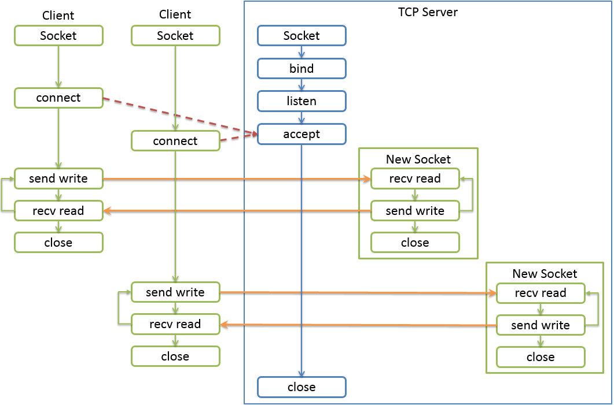

TCP编程
Socket套接字。Socket是一种通用的网络编程接口，和网络层次没有一一对应的关系。
Python中标准库中提供了socket模块。socket模块中也提供了socket类，实现了对底层接口的封装，
socket模块是非常底层的接口库。
socke类定义为
1 | socket(self, family=AF_INET, type=SOCK_STREAM, proto=0, fileno=None) |
协议族
AF表示Address Family，用于socket()第一个参数
| 名称 | 含义 |
|---|---|
| AF_INET | IPV4 |
| AF_INET6 | IPV6 |
| AF_UNIX | Unix Domain Socket，windows没有 |
Socket类型
| 名称 | 含义 |
|---|---|
| SOCK_STREAM | 面向连接的流套接字。默认值，TCP协议 |
| SOCK_DGRAM | 无连接的数据报文套接字。UDP协议 |
TCP协议是流协议，也就是一大段数据看做字节流，一段段持续发送这些字节。
UDP协议是数据报协议，每一份数据封在一个单独的数据报中，一份一份发送数据
socket常用方法
socket类创建出socket对象，这个对象常用方法如下
| 名称 | 含义 |
|---|---|
| socket.recv(bufsize[, flags]) | 获取数据。默认是阻塞的方式 |
| socket.recvfrom(bufsize[, flags]) | 获取数据，返回一个二元组(bytes, address) |
| socket.recv_into(buffer[, nbytes[,flags]]) | 获取到nbytes的数据后，存储到buffer中。如果nbytes没有指定或0，将buffer大小的数据存入buffer中。返回接收的字节数。 |
| socket.recvfrom_into(buffer[, nbytes[,flags]]) | 获取数据，返回一个二元组(bytes, address)到buffer中 |
| socket.send(bytes[, flags]) | TCP发送数据，发送成功返回发送字节数 |
| socket.sendall(bytes[, flags]) | TCP发送全部数据，成功返回None |
| socket.sendto(string[,flag],address) | UDP发送数据 |
| socket.sendfile(file, offset=0,count=None) | 发送一个文件直到EOF，使用高性能的os.sendfile机制，返回发送的字节数。如果win下不支持sendfile，或者不是普通文件，使用send()发送文件。offset告诉起始位置。3.5版本开始 |
| socket.getpeername() | 返回连接套接字的远程地址。返回值通常是元组 |
| (ipaddr,port)socket.getsockname() | 返回套接字自己的地址。通常是一个元组(ipaddr,port) |
| socket.setblocking(flag) | 如果flag为0，则将套接字设为非阻塞模式，否则将套接字设为阻塞模式（默认值） 非阻塞模式下，如果调用recv()没有发现任何数据，或send()调用无法立即发送数据，那么将引起socket.error异常 |
| socket.settimeout(value) | 设置套接字操作的超时期，timeout是一个浮点数，单位是秒。值为None表示没有超时期。一般，超时期应该在刚创建套接字时设置，因为它们可能用于连接的操作（如connect()） |
| socket.setsockopt(level,optname,value) | 设置套接字选项的值。比如缓冲区大小。太多了，去看文档。不同系统，不同版本都不尽相同 |
TCP编程
C/S编程
socket编程，是完成一端和另一端通信的，注意一般来说这两端分别处在不同的进程中，也就是说网络
通信是一个进程发消息到另外一个进程。
我们写代码的时候，每一个socket对象只表示了其中的一端。
从业务角度来说，这两端从角色上分为：
- 主动发送请求的一端，称为客户端Client
- 被动接受请求并回应的一端，称为服务端Server
这种编程模式也称为C/S编程。
服务器端编程步骤
- 创建Socket对象
- 绑定IP地址Address和端口Port。bind()方法IPv4地址为一个二元组(‘IP地址字符串’, Port)
- 开始监听，将在指定的IP的端口上监听。listen()方法
- 获取用于传送数据的Socket对象
socket.accept() -> (socket object, address info)
accept方法阻塞等待客户端建立连接，返回一个新的Socket对象和客户端地址的二元组
地址是远程客户端的地址，IPv4中它是一个二元组(clientaddr, port)- 接收数据
recv(bufsize[, flags]) 使用缓冲区接收数据 - 发送数据
send(bytes)发送数据
- 接收数据
1 | Server端开发 |

socket初识
1 | import socket |
上例accept和recv是阻塞的，主线程经常被阻塞住而不能工作。怎么办？
实战——写一个群聊程序
需求分析
聊天工具是CS程序，C是每一个客户端client，S是服务器端server。
服务器应该具有的功能：
- 启动服务，包括绑定地址和端口，并监听
- 建立连接，能和多个客户端建立连接
- 接收不同用户的信息
- 分发，将接收的某个用户的信息转发到已连接的所有客户端
- 停止服务
- 记录连接的客户端
代码实现
服务端应该设计为一个类
1 | import datetime |
本博客所有文章除特别声明外，均采用 CC BY-NC-SA 4.0 许可协议。转载请注明来源 ren_mccの博客！
相关推荐

2023-06-21
封装和解构
1. 基本概念 1234t1 = 1, 2print(type(t1)) # 什么类型t2 = (1, 2)print(type(t2)) Python等式右侧出现逗号分隔的多值的时候，就会将这几个值封装到元组中。这种操作称为封装packing 123x, y = (1, 2)print(x) # 1print(y) # 2 Python中等式右侧是一个容器类型，左侧是逗号分隔的多个标识符，将右侧容器中数据的一个个和左侧标识符一一对应。这种操作称为解构unpacking。 从Python3开始，对解构做了很大的改进，现在用起来已经非常的方便快捷。 封装和解构是非常方便的提取数据的方法，在Python、JavaScript等语言中应用极广 12345678910# 交换数据x = 4y = 5t = xx = yy = t# 封装和解构，交换x = 10y = 11x, y = y, x 2. 简单解构 12345678910# 左右个数相同a,b = 1,2a,b = (1,2)a,b = [1,2]a,b = [10,20]a,b = {10,20} #...

2023-06-19
基础语法
1. Python发展 1989年圣诞节期间，为了打发无聊的时间，荷兰人Guido van Rossum（数学、计算机双硕士，2005年加入Google，2013年加入DropBox），决心开发一种新的解释性脚本语言。 1991年初发布了第一个公开发行版。由于他是英国BBC喜剧《Monty Python’s Flying Circus》的忠实粉丝，因此为这门语言取名Python。 Python目前已经成为很多大学的编程课语言。甚至在国内一些考试已经引入了Python。科学计算方面、运维领域Python几乎已经成为最主要的编程语言，拥有非常方便快捷开发的库。 Python的哲学，可以使用 import this 查看Python之禅。 2....

2023-06-19
线性数据结构
1. 内建常用数据类型 分类 数值型 int、float、complex、bool 序列sequence 字符串str、字节序列bytes、bytearray 列表list、元组tuple 键值对 集合set、字典dict 2. 数值型 int、float、complex、bool都是class，1、5.0、2+3j都是对象即实例 int：python3的int就是长整型，且没有大小限制，受限于内存区域的大小 float：由整数部分和小数部分组成。支持十进制和科学计数法表示。C的双精度型实现 complex：有实数和虚数部分组成，实数和虚数部分都是浮点数，3+4.2J bool：int的子类，仅有2个实例True、False对应1和0，可以和整数直接运算 2.1 类型转换 int、float、complex、bool也可以当做内建函数对数据进行类型转换 int(x) 返回一个整数 float(x) 返回一个浮点数 complex(x)、complex(x,y) 返回一个复数 bool(x) 返回布尔值，前面讲过False等价的对象 2.2...

2023-06-22
哈希表
1. 集合Set 集合，简称集。由任意个元素构成的集体。高级语言都实现了这个非常重要的数据结构类型。 Python中，它是可变的、无序的、不重复的元素的集合。 1.1 初始化 set() -> new empty set object set(iterable) -> new set object 12345678s1 = set()s2 = set(range(5))s3 = set([1, 2, 3])s4 = set('abcdabcd')s5 = {} # 这是什么？s6 = {1, 2, 3}s7 = {1, (1,)}s8 = {1, (1,), [1]} # ？ 1.2...

2023-06-22
解析式和生成器表达式
1.列表解析式 列表解析式List Comprehension，也叫列表推导式 12345678# 生成一个列表，元素0~9，将每一个元素加1后的平方值组成新的列表x = []for i in range(10): x.append((i+1)**2) print(x)# 列表解析式print([(i+1)**2 for i in range(10)]) 语法 [返回值 for 元素 in 可迭代对象 if 条件] 使用中括号[]，内部是for循环，if条件语句可选 返回一个新的列表 列表解析式是一种语法糖 编译器会优化，不会因为简写而影响效率，反而因优化提高了效率 减少程序员工作量，减少出错 简化了代码，增强了可读性 1234567891011121314[expr for item in iterable if cond1 if cond2]等价于ret = []for item in iterable: if cond1: if cond2: ret.append(expr)# [expr for i in...

2023-06-24
函数作用域
1. 作用域 一个标识符的可见范围，这就是标识符的作用域。一般常说的是变量的作用域 1234def foo(): x = 100print(x) # 可以访问到吗 上例中x不可以访问到，会抛出异常（NameError: name ‘x’ is not defined），原因在于函数是一个封装，它会开辟一个作用域，x变量被限制在这个作用域中，所以在函数外部x变量不可见。 注意：每一个函数都会开辟一个作用域 2. 作用域分类 全局作用域 在整个程序运行环境中都可见 全局作用域中的变量称为全局变量global 局部作用域 在函数、类等内部可见 局部作用域中的变量称为局部变量，其使用范围不能超过其所在局部作用域 也称为本地作用域local 1234567# 局部变量def fn1(): x = 1 # 局部作用域，x为局部变量，使用范围在fn1内def fn2(): print(x) # x能打印吗？可见吗？为什么？print(x) # x能打印吗？可见吗？为什么？ 123456# 全局变量x = 5 # 全局变量，也在函数外定义def foo(): ...
评论